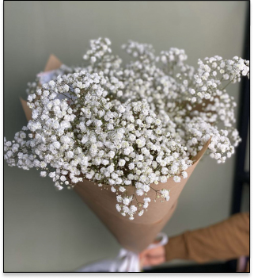
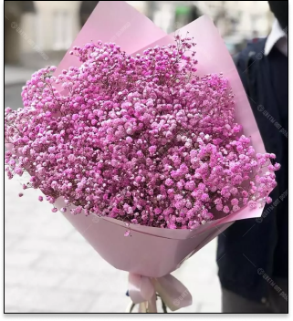

Гипсофила символизирует чистоту сердца, искренность и счастье. Этот цветок часто используется в качестве одного из важных изобразительных средств в икибане, где каждый компонент цветочного произведения имеет глубокий философский смысл
Гипсофила

Значение цветка

Уход за цветами
В вазе гипсофила может стоять до месяца, а после высыхания гипсофила прекращается в сухоцвет, не теряя формы и цвета. Уход за растением в вазе очень простой: достаточно менять воду раз в 1-2 дня и подрезать стебли острым ножом. Чтобы защитить цветы от бактерий, флористы рекомендуют перед постановкой в воду удалить со стебля все листочки. А если в дальнейшем вы хотите использовать гипсофилу как сухоцвет, то изначально не рекомендуется ставить ее в воду. Благодаря этому она сохранит свой первозданный свежий вид.